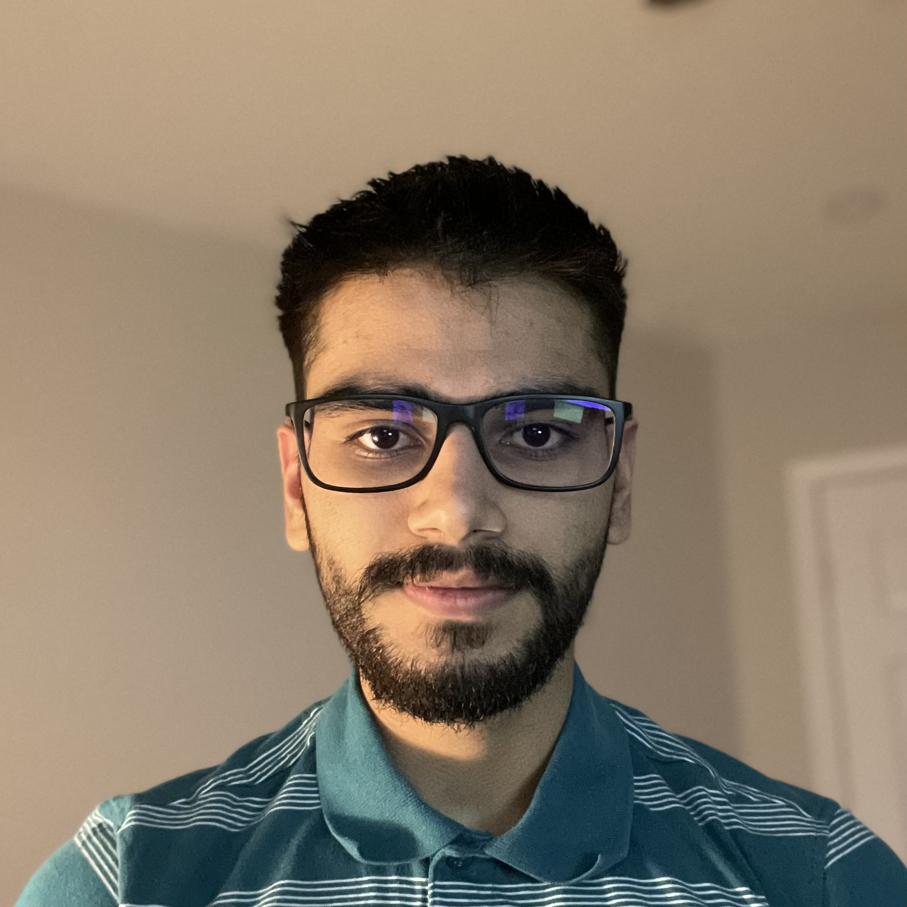
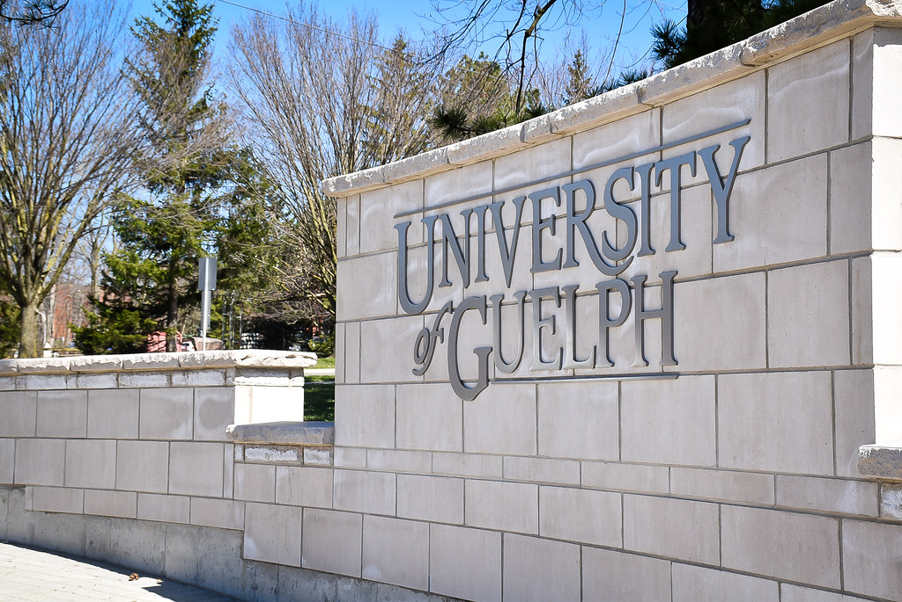
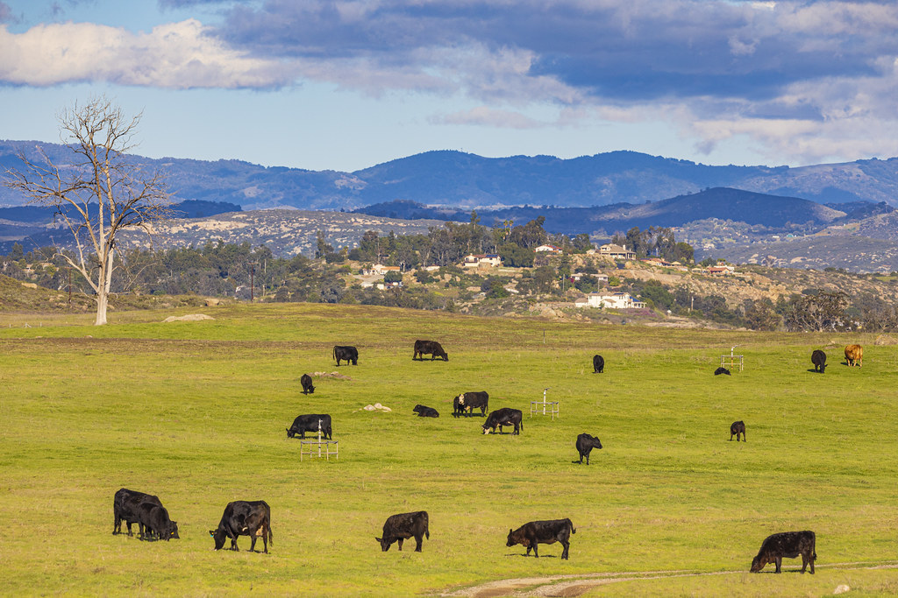
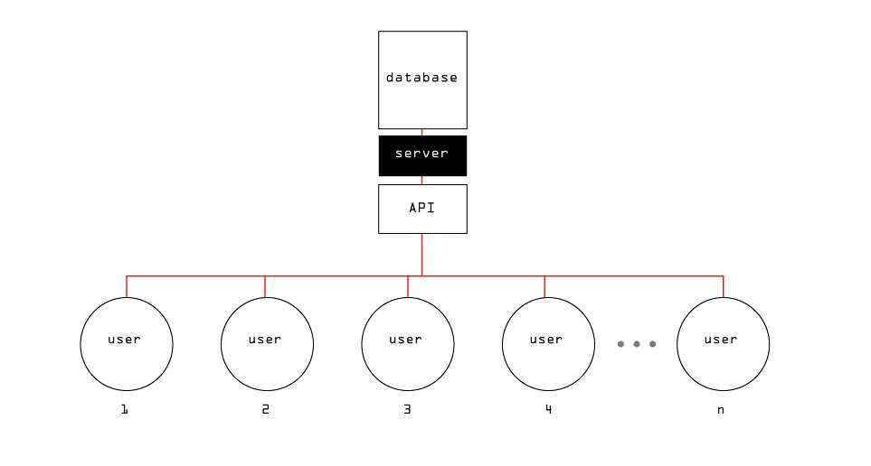
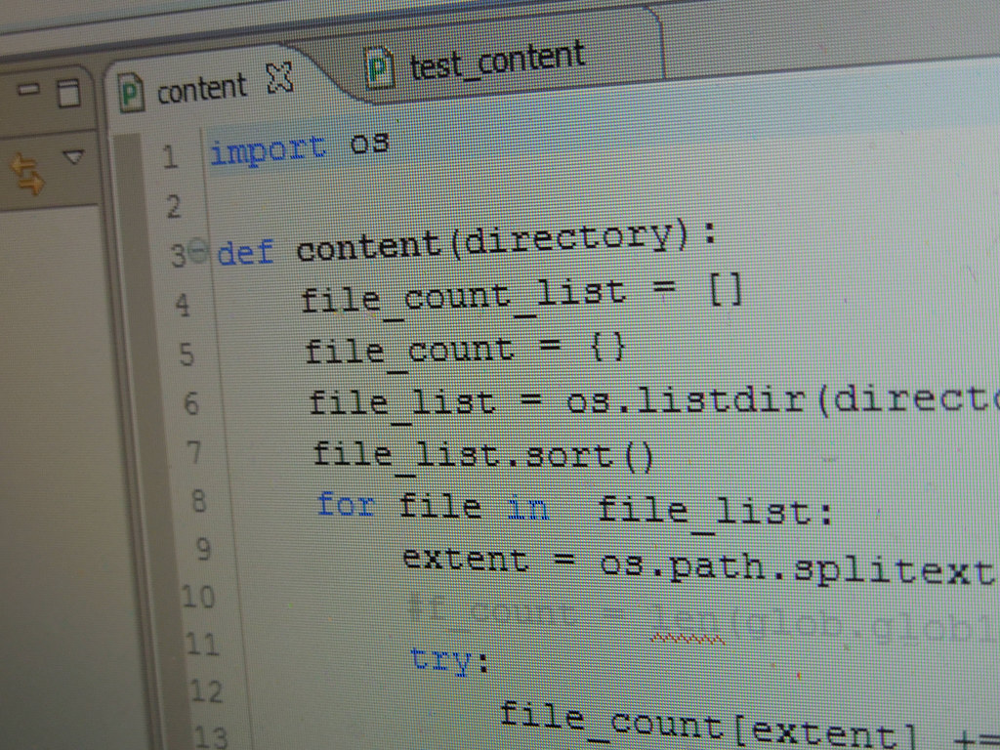
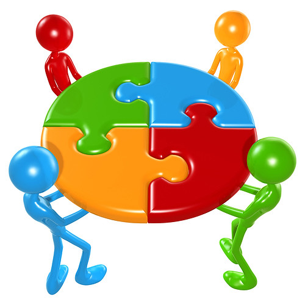

My First Co-op Work Term Experience - Work Term Report
Written by: Himmat Mahal
Introduction
As a brief intro, I am a Computer Science Major Co-op, Math Minor,
Honours B.Comp student. After finishing my second year at the University,
I started my first co-op work term during the summer of 2021. I thoroughly
enjoyed my time during this term working as a Data Programmer and Analyst
with the School of Computer Science at the University of Guelph. I learned
plenty of valuable things, and got to work with a supportive team on an
interesting project involving data about animals. I am very lucky to have
been a part of the team.

"University of Guelph Sign" by
universityofguelph is marked under CC PDM 1.0. To view the terms,
visit https://creativecommons.org/publicdomain/mark/1.0/
Information about GBADs
I worked with my team on an ongoing project known as the Global Burden
of Animal Diseases (GBADs). This project involves teams in universities
across the globe. I was part of the informatics team at the University
of Guelph which consisted of approximately eleven individuals at the
time, and was brought in with three other co-op students for the summer.
The informatics team worked on gathering data for the project. As a brief
overview, GBADs studies the impact of livestock, animal diseases,
and sustainability.
"Internet computer business" by MarcelaPalma
is licensed with CC BY-NC-SA 2.0. To view a copy of this license,
visit https://creativecommons.org/licenses/by-nc-sa/2.0/

"Cows In the Pasture" by slworking2 is
licensed with CC BY-NC-SA 2.0. To view a copy of this license,
visit https://creativecommons.org/licenses/by-nc-sa/2.0/
What I Have Learned
I developed a handful of learning goals to help guide my journey for
this work term. There were four primary learning outcomes that I
wanted to expand my skill set through, and I added a fifth one later
on in the term. Below, I will describe each goal, how I went about
accomplishing it throughout my job, reflect on what I learned and how
the goal will be beneficial to me.
- My first goal was to improve upon my technological literacy by learning how to interact with APIs more effectively, so that I can use them properly in applications. As part of my job duties, I had to read documentation on several APIs, document important information, and write sample API calls to obtain data, such that they can be used by other team members and in different settings for the project. I also used these APIs while developing a Command Line Interface (CLI) built with python, which made accessing the data from various sources much easier. I succeeded in the pursuit of this learning goal, and some of my team members found my work here very valuable since some of the APIs were rather difficult to use. As a bonus, I got practice with common data exchange formats like JSON, CSV, XML, and learning to convert between them. Since working with technology requires one to be able to learn to use a variety of complex technological tools, I am confident that my improved ability to read documentation, even when it is difficult-to-read, will be beneficial in my career. Moreover, REST APIs are a very widely used tool for web services, and my practice with using them will also be an important skill for my career.

"Twitter diagram" by josephbergen is licensed with CC BY-NC-ND 2.0. To view a copy of this license, visit https://creativecommons.org/licenses/by-nc-nd/2.0/
- My next goal was to improve my written communication abilities. Specifically, to improve my ability to write concise documentation about my work, so that it can be easily understood by my team members. I made progress on this goal throughout my job duties, when I wrote about my findings on data sources for the project. While researching data sources, I kept track of information that would be useful to the team, such as which project needs a particular data source can satisfy. I also wrote documentation on the CLI that I developed in Python. I received positive feedback from my manager in this area, hence I can confidently say that I have achieved this learning goal. This goal will be very helpful in the future, because I believe that working effectively in a team necessitates good written communication, especially in tech, where good documentation is extremely useful. Therefore, improving my ability to document my technical work is a skill I believe will help tremendously in future work terms.
- My third learning goal was to learn how to assess an assortment of sources, and research and analyze them to see what they can provide in terms of data in order to meet a set of needs for a project. This goal was set in order to help improve my abilities in critical and creative thinking, specifically inquiry and analysis. Along with the first two learning goals, my success on the job relied on this. Since the project needs were specific and complex, I had to dive into different sources, and do my best to research how exactly they could be used for GBADs. I succeeded here as well, because I was productive in my daily job duties which required these skills; I quickly became comfortable in evaluating different sources to see how they could be used for the project's needs. This is an essential skill, as whether for a personal project, an academic project, or a job, technical or non-technical, work is typically centered around solving a problem, and having a set of reliable tools to solve it is of paramount importance. In my case, these tools were the data sources that provided the data which was central to the project.
- My fourth learning goal was to improve my personal organization and time management. Specifically, by improving my ability to consistently finish assigned work to the best of my ability under minimal supervision. I did this by regularly using a planner, listening attentively throughout all meetings, and asking for feedback to improve upon my work and ensure its quality. Throughout the job, I also made an effort to set my own timelines for completion of certain tasks in order to ensure that my productivity was consistent. This was one of the more difficult learning goals, since it required me to be committed to the goal every day throughout the work term. One thing I could have done better in regards to personal organization, is to have been a bit more proactive in asking for clarification when I was not fully sure of something my supervisor requested. All things considered, I made considerable progress on this learning goal, and my supervisor was very pleased with my organization, time management, and productivity. This will definitely help me in future co-op work terms and at university, since personal organization and time management are essential in the workplace as well as academic settings.
- Finally, a goal that I set later during the work term, as my duties shifted towards development, was to improve my Python abilities. This is in the same domain as my first goal of technological literacy. Later during the work term I began developing a Command Line Interface (CLI) for the project in Python, which involved learning a lot of new Python concepts. I gained experience designing python projects, testing, documenting, and packaging them. Evaluating the various packages and tools that could be used for the project was also an essential part of developing the CLI. Although I knew python relatively well going into the work term, I gained a substantial amount of Python programming expertise during the job. Apart from python, designing the project and evaluating tools/packages that could be used, also improved my ability to think critically and creatively. Python is an incredibly powerful language with innumerable applications, therefore I am confident that getting better at it will help in my journey as a CS student.

"Python Program" by thekirbster is licensed with CC BY 2.0. To view a copy of this license, visit https://creativecommons.org/licenses/by/2.0/
To summarize the five learning goals described in depth above, the areas I focused on improving were: technological literacy, written communication, inquiry and analysis, personal organization and time management. I accomplished all of these goals throughout the work term, with the support of my supervisor and team members. I also kept track of things I could have done better. Furthermore, my achievement of these was helpful in my performance on the job, and will definitely help me succeed in future work terms.
The Job
The job as a Data Programmer and Analyst was for students with programming ability in Python and/or R, with an interest in data. SQL experience was considered a bonus. The role was within a team working on the Global Burden of Animal Diseases (GBADs) project. The team at the University of Guelph was the informatics team which consisted of approximately eleven individuals at the time, and there were meetings at least once a week, where we discussed progress, obstacles, plans moving forward, etc.
Within the team, I worked with three other co-op students for this work term and we evenly split up the workload. We all worked on different aspects of the projects involving gathering animal related data from a variety of sources. I had the technical prerequisite skills needed for the job; I learned python through many personal projects and personal learning experiences, and had a strong understanding about the core concepts involved in programming through my undergraduate CS courses. Nonetheless, I picked up a myriad of new skills on the job that helped me succeed in the role, which I have described in detail in the “What I Have Learned” section.
In short, I helped out with GBADs in many different ways. Some things I did include:
- I analyzed data sources to see how they could be used for the project.
- I concisely documented my findings on these data sources, keeping track of certain information, so that my team members could quickly get an idea of my work.
- In python, I designed, developed and tested software. Specifically a CLI, as a tool to help gather data from these sources and save them in different formats.

"Working Together Teamwork Puzzle Concept" by rama_miguel is licensed with CC BY-SA 2.0. To view a copy of this license, visit https://creativecommons.org/licenses/by-sa/2.0/
Conclusion
Overall, it was a very memorable experience to work with the GBADs Informatics team at the University of Guelph. I learned a lot of new things and developed skills that will certainly help me in future work terms. There was always something that I found interesting and engaging to do at work, and it was an incredibly supportive environment. I also learned some interesting facts about animal metrics while working for GBADs. This work term has certainly contributed towards my success as a Bachelor of Computing Co-op Computer Science and Math Student.
Acknowledgements
I would like to thank my supervisor, Dr. Deborah Stacey, who gave me the opportunity in the first place and was always there for support and encouragement as well as constructive feedback, which was essential in my success throughout the work term.